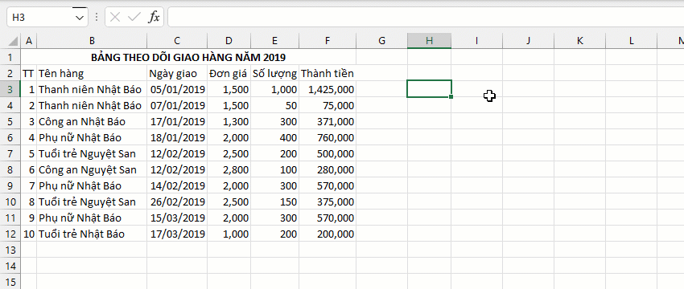

VD1: Thống kê tổng doanh thu tất cả mặt hàng theo từng tháng (Tháng 1,2,3).
=GROUPBY.\AU(array, [has_header], [colsgroup], [cols_index], [func_name],..) - array: tham chiếu vùng. - has_header: chỉ rõ vùng chứa header hoặc không?. - colsgroup: mảng (một hoặc nhiêu cột) làm điều kiện phân nhóm (nếu nhiều cột sẽ phân nhóm đồng thời). - cols_index: vị trí cột tính toán. - func_name : công thức tùy chỉnh áp dụng cho cột (hỗ trợ các hàm tùy chỉnh nâng cao - xem hàm GROUP).
- Hàm không phụ thuộc vào số lượng cột cũng như số lượng dòng dữ liệu. - Hàm hỗ trợ thêm cột mới (vị trí cuối cùng) nếu để tính giá trị ẩn phụ. - Đối số [cols_group] có thể nhiều cột (mỗi cột là một tiêu chí). - Chỉ cho phép đặt ẩn phụ trong phạm vi cột (Vd: GROUPBY(array,,byarray,"v1=max",2,"v2=min",3,"v1+v2")).
Related function
GROUP Phân nhóm bảng dữ liệu dựa trên trường (cột) chỉ định, hỗ trợ tính toán tùy chỉnh.
XGROUPBY Hàm mở rộng của GROUPBY. (hỗ trợ các hàm nâng cao).
Return to Home